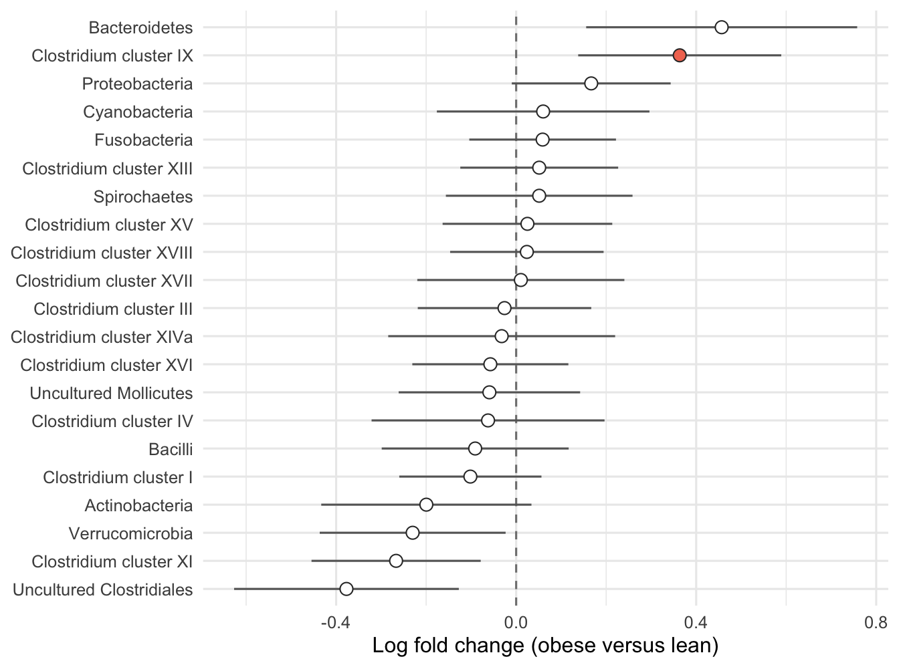

ANCOM-BC (analysis of compositions of microbiomes with bias correction) tests for differential abundance of taxa between groups. It estimates the sample-specific sampling fraction, corrects the resulting bias in a log-linear model, and reports effect estimates, standard errors, and adjusted p-values for each taxon.
The R tutorial applies ANCOM-BC to the HITChip Atlas data set of intestinal microbiota profiles from Western adults, distributed with the microbiome package as atlas1006. The analysis tests whether the abundance of each taxon, aggregated at the Family rank of the data set, differs between body mass index (BMI) groups, adjusted for age and geographic region.
Let \(o_{ij}\) denote the observed abundance of taxon \(i\) in sample \(j\), and let \(\mathbf{x}_j\) denote the covariate vector of sample \(j\), including an intercept. ANCOM-BC assumes
where \(d_j\) is the log sampling fraction of sample \(j\) and \(\varepsilon_{ij}\) is a mean-zero error. The sampling fraction is not observed and differs between samples, which biases an unadjusted comparison of observed abundances. ANCOM-BC estimates \(d_j\), and for coefficient \(k\) of taxon \(i\) tests
The coefficient \(\beta_{ik}\) is a log fold change in absolute abundance on the natural-log scale.
Data
library(ANCOMBC)library(tidyverse)data(atlas1006, package ="microbiome")# Baseline samples only, so that each subject contributes one sample.pseq <- phyloseq::subset_samples(atlas1006, time ==0)meta <-data.frame(phyloseq::sample_data(pseq))# BMI in three groups, with lean as the reference level.meta$bmi <-fct_collapse(meta$bmi_group,obese =c("obese", "severeobese", "morbidobese"))meta$bmi <-factor(meta$bmi, levels =c("lean", "overweight", "obese"))# Geographic region, with Central Europe as the reference level.meta$region <-fct_collapse(meta$nationality,CE ="CentralEurope", NE =c("Scandinavia", "UKIE"),SE ="SouthEurope", EE ="EasternEurope", US ="US")phyloseq::sample_data(pseq) <- metatse <- mia::convertFromPhyloseq(pseq)tse
res <- out$restab_obese <-tibble(taxon = res$lfc$taxon,lfc = res$lfc$bmiobese,se = res$se$bmiobese,W = res$W$bmiobese,p = res$p_val$bmiobese,q = res$q_val$bmiobese,diff = res$diff_abn$bmiobese) |>arrange(q)knitr::kable(tab_obese, digits =3,caption ="Obese versus lean, adjusted for age and region.")
Obese versus lean, adjusted for age and region.
taxon
lfc
se
W
p
q
diff
Clostridium cluster IX
0.363
0.115
3.158
0.002
0.033
TRUE
Bacteroidetes
0.457
0.154
2.973
0.003
0.059
FALSE
Uncultured Clostridiales
-0.377
0.127
-2.960
0.003
0.059
FALSE
Clostridium cluster XI
-0.267
0.096
-2.781
0.005
0.097
FALSE
Verrucomicrobia
-0.230
0.105
-2.183
0.029
0.494
FALSE
Actinobacteria
-0.200
0.119
-1.675
0.094
1.000
FALSE
Bacilli
-0.091
0.106
-0.859
0.390
1.000
FALSE
Clostridium cluster I
-0.102
0.081
-1.263
0.207
1.000
FALSE
Clostridium cluster III
-0.026
0.098
-0.263
0.793
1.000
FALSE
Clostridium cluster IV
-0.062
0.132
-0.473
0.636
1.000
FALSE
Clostridium cluster XIII
0.051
0.089
0.573
0.567
1.000
FALSE
Clostridium cluster XIVa
-0.032
0.129
-0.250
0.802
1.000
FALSE
Clostridium cluster XV
0.025
0.096
0.260
0.795
1.000
FALSE
Clostridium cluster XVI
-0.057
0.088
-0.649
0.516
1.000
FALSE
Clostridium cluster XVII
0.010
0.117
0.089
0.929
1.000
FALSE
Clostridium cluster XVIII
0.024
0.087
0.273
0.785
1.000
FALSE
Cyanobacteria
0.060
0.121
0.498
0.619
1.000
FALSE
Fusobacteria
0.059
0.083
0.707
0.479
1.000
FALSE
Proteobacteria
0.167
0.090
1.852
0.064
1.000
FALSE
Spirochaetes
0.051
0.106
0.484
0.628
1.000
FALSE
Uncultured Mollicutes
-0.059
0.103
-0.578
0.563
1.000
FALSE
tab_obese |>mutate(taxon =fct_reorder(taxon, lfc)) |>ggplot(aes(x = lfc, y = taxon)) +geom_vline(xintercept =0, linetype ="dashed", color ="grey50") +geom_errorbarh(aes(xmin = lfc -1.96* se, xmax = lfc +1.96* se),height =0, color ="grey40") +geom_point(aes(fill = diff), shape =21, size =3, color ="grey20") +scale_fill_manual(values =c(`TRUE`="#f2775f", `FALSE`="white"),guide ="none") +labs(x ="Log fold change (obese versus lean)", y =NULL) +theme_minimal(base_size =12)

Figure 1: Log fold change (natural log) in absolute abundance, obese versus lean, with 95% confidence intervals. Filled points have an adjusted p-value below 0.05.
The same extraction applies to every other coefficient, for example bmioverweight or age.
Global test
The global test evaluates, for each taxon, the null hypothesis that the abundance is equal across all levels of group.
out$res_global |>arrange(q_val) |> knitr::kable(digits =3, caption ="Global test across the three BMI groups.")
Global test across the three BMI groups.
taxon
W
p_val
q_val
diff_abn
Uncultured Clostridiales
14.038
0.002
0.038
TRUE
Bacteroidetes
11.989
0.005
0.100
FALSE
Clostridium cluster XVII
0.011
0.011
0.208
FALSE
Clostridium cluster IX
9.970
0.014
0.246
FALSE
Clostridium cluster XI
7.737
0.042
0.710
FALSE
Actinobacteria
5.439
0.132
1.000
FALSE
Bacilli
2.121
0.692
1.000
FALSE
Clostridium cluster I
1.800
0.813
1.000
FALSE
Clostridium cluster III
0.504
0.446
1.000
FALSE
Clostridium cluster IV
0.494
0.437
1.000
FALSE
Clostridium cluster XIII
0.329
0.303
1.000
FALSE
Clostridium cluster XIVa
0.227
0.215
1.000
FALSE
Clostridium cluster XV
0.068
0.067
1.000
FALSE
Clostridium cluster XVI
0.431
0.388
1.000
FALSE
Clostridium cluster XVIII
0.264
0.248
1.000
FALSE
Cyanobacteria
0.249
0.234
1.000
FALSE
Fusobacteria
0.533
0.468
1.000
FALSE
Proteobacteria
4.129
0.254
1.000
FALSE
Spirochaetes
0.263
0.246
1.000
FALSE
Uncultured Mollicutes
0.995
0.784
1.000
FALSE
Verrucomicrobia
4.793
0.182
1.000
FALSE
Structural zeros
A taxon is a structural zero in a group if it is absent from that group. Such a taxon is declared differentially abundant between that group and any group in which it is present, without a test.
zero_ind <- out$zero_indn_struc <-sum(rowSums(zero_ind[, -1, drop =FALSE]) >0)n_struc
#> [1] 0
In this analysis, 0 of the 21 taxa are structural zeros in at least one BMI group.
Bias-corrected abundances
The estimated log sampling fractions are returned in samp_frac. Subtracting them from the log observed abundances gives bias-corrected log abundances, which are comparable between samples.
samp_frac <- out$samp_fracsamp_frac[is.na(samp_frac)] <-0# samples excluded from the analysislog_obs <-log(out$feature_table +1)log_corr <-t(t(log_obs) - samp_frac)round(log_corr[1:5, 1:4], 2)
The code in this tab is shown for reference and is not executed on this page.
ANCOM-BC is available in scikit-bio from version 0.7.1.
pip install scikit-bio
import pandas as pdfrom skbio.stats.composition import ancombc# Counts with samples in rows and taxa in columns; metadata with one row per sample.table = pd.read_csv("counts.tsv", sep="\t", index_col=0)metadata = pd.read_csv("metadata.tsv", sep="\t", index_col=0)res = ancombc(table, metadata, formula="age + region + bmi", p_adjust="holm", alpha=0.05)
The arguments and the structure of the result are listed in the function reference.
The command in this tab is shown for reference and is not executed on this page.
ANCOM-BC is an action of the q2-composition plugin, which is included in the QIIME 2 amplicon distribution.
A web tool for this method is in development. This tab will hold its link and a walk-through at release.
Citation
Lin H, Peddada SD. Analysis of compositions of microbiomes with bias correction. Nature Communications 11:3514 (2020). doi:10.1038/s41467-020-17041-7
For the Python implementation, also cite: Wu Z, Lin H, Morton JT, Zhu Q. Efficient and scalable Python implementation of ANCOM-BC and ANCOM-BC2 for omics differential abundance testing. Bioinformatics 42(10):btag767 (2026). doi:10.1093/bioinformatics/btag767
Related methods
ANCOM-BC2: multiple groups, covariate adjustment, and repeated measures.